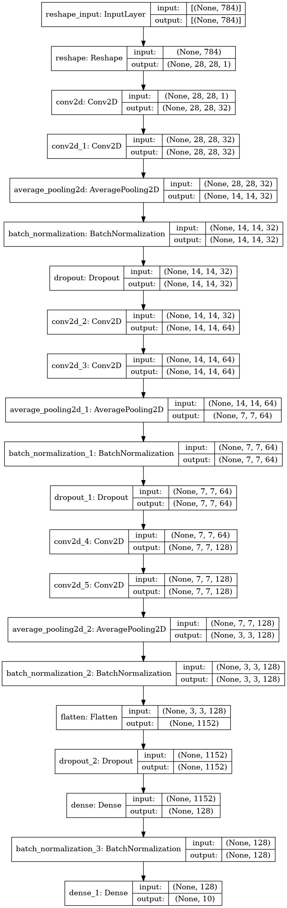

The data is the famous MNIST digit recognition dataset. I've used the dataset from kaggle which consists of 42,000 training images and 28,000 test images. Each image is a 28x28 grayscale image, associated with a label from 0 to 9. The data, I've used is in CSV format with 28*28+1=785 columns, one for each pixel, and one for the label. The pixel values are not normalized, and are in the range 0-255. The data is available at Kaggle.
The goal of the project is to develope a model that can classify the images into their respective labels.
Not lot of preprocessing is neede for this dataset as it is already in a well formatted CSV file. The only thing that needs to be done is to normalize the dataset so that the pixel values range from 0-1 instead of 0-255. This is done by dividing the pixel values by 255. The dataset is then split into training and validation sets. The training set is used to train the model and the validation set is used to evaluate the model. The validation set is 10% of the training set.
I'm using Tensorflow for deep learning models. With GPU if we do some preprocessing to the dataset using the
tf.Data API, the training time can be reduced significantly. Though, we have a very small dataset
and we can go on without using these steps, I've done it anyway. In brief, these are the steps which are done to
make the training faster:
tf.data.Dataset.from_tensor_slices and
tf.data.Dataset.zip.
prefetch which prepares subsequent batches of data whilst other batches of data are being
computed on.tf.data.AUTOTUNE so that Tensorflow can figure out itself how many number of parallel
calls it should make.See the article Better performance with the tf.data API
The dataset is balanced, meaning that there are the same number of samples for each class. So, I've used accuracy as the performance metric. Kaggle also uses the same metric to evaluate the model. This is another reason why I've used accuracy as the performance metric.
The base model is a simple logistic regression for machine learning model. The base model give an accuracy of 91.31% on the validation set.
Here, the base model used is a two layered model with hidden layer with 128 nuerons and relu
activation function. The output layer is a softmax with 10 nuerons, one for each class. This architecture has a
total 101,770 parameters. The model is trained for 10 epoch resulting in a test accuracy of 97.11%. This is a
greate improvement over the accuracy of the base ML model.
Various ML models are tried, first using default values of the hyperparameters and then are fine-tuned if the result is coming out to be satisfactory.
To make the training faster, tf.data API is used as descibed in section 3.1. Apart from these, some
more steps are also done.
Before starting experimenting, two callbacks has been defined to keep track of the experiments. These are:
ModelCheckpoint: This will save the weights of the best model which can be loaded later.EarlyStopping: This callback will stop the training if the performance is not improving.Adam optimizer is used throughout the training process. Loss is set to be
categorical_crossentropy.
The base model uses a plain feed forward network. However, CNN are known to work the best with images so I shifted from fully connected layers CNN's. A variety of architectures using CNN are considered.
To avoid overfitting, mainly two things are done:
Dropout layer which drops which randomly sets input units to 0 with a frequency of
rate at each step during training time.BatchNormalization layer which applies a transformation that maintains the mean output
close to 0 and the output standard deviation close to 1. This is shown to be have a regulating behaviour and
also makes the model fit well.Apart from these, some times, l1 and l2 normalization is also performed on the weights
of CNN by setting kernel_regularizer parameter of CNN to
tf.keras.regularizers.[l1]/[l2]/[l1l2] or
Usually, I perform a three step grid search for the hunt of the best parameters. In first try, grida very coarse grid is set which becomes finer and finer as the iteration reaches to the third. Sometime, even a fourth grid search is also performed. The fine tuning for ML model is done this way for this project.
Since I was looking for CNN architectures, I started with some architectures which were already known to perform
great, like VGG16 and used them to built a similar architecture. Also, KerasTuner was used to do
some of the fine tuning.
The model is not deployed.
The best performing model is the SVM with an accuracy of 97.60% on the validation set. The xgboost also performs similarly with an accuracy of 97.50% on the validation set. Even these results looks greate but are nothing compared to the deep learning models.
The best performing model has an accuracy of 99.57% on test set. On kaggle, this gives an accuracy of 99.48%. This is deep CNN with about 20 layers and 436,010 trainable parameters. Below is the architecture:

We can try exploring some more architectures in hope that the result will be better. Also, I've not used transfer learning. We can try using some pre-trained models and fine tune them to get better results. Also, we have seen that the model performs poor some images which are very alike. There are also some images which is not possible to read even for human and hence its label in ambiguous. We can try labeling these images correctly and then train the model again. Apart from these, the model is trained on just 42k images. We can try training the model on more images.
Transfer learning can be used to get better results. I might also try some more architectures.
I was training a number of CNN architectures and the result were not coming out to be good. In fact, the results
were worse then that to the base DL model. It turned out that I was using GlobalAveragePooling2D at
the last of the CNN's to feed the extracted fearures to fully connected layers and it was not capturing the
features correctly. It took me some time to realise that I should try the GlobalMaxPooling2D
instead. I did and there was a huge boost it accuracy!
Another mistake was using l1 and l2 normaliztion as regulation technique. Using them
was resulting in underfitting even if the value of the normalization were set to be 0.01. It turned
out that the Dropout and BatchNormalization layers were better options for
regularization.
The most challenging aspect of the project was to avoid overfitting of the dataset. Even a simple 3-4 layered
nueral network was overfitting the dataset severly. To reduce overfitting, I first tried using l1
and l2 normalization. But, it was not working. Using a small value of l1 and/or
l2 was reducing the performance very much and the model was not fitting even the train set. The
final working solution for me turned out to be using Dropout and BatchNormalization
layers. Using these, I was able to train deep CNN's without much overfitting the dataset.
Machine learning models performs great when we have structured data. But, when we have images, the data is not structured. The pixels are not independent of each other. The pixels in the image are correlated. This is why ML models did not work that well.
DL models, that is, CNN's, work great because they are extract information from the images like edges, corners, etc. and then use these features to classify the images. This is the same way our brain works. What more, use of CNN vastly reduces the number of parameters in the model and hence the chances of overfitting also reduces.
There are 10 classes in the dataset and all are balanced. However, there might be some sort of unbalance in train and test dataset because of the random shuffling. But, this is not a big issue.